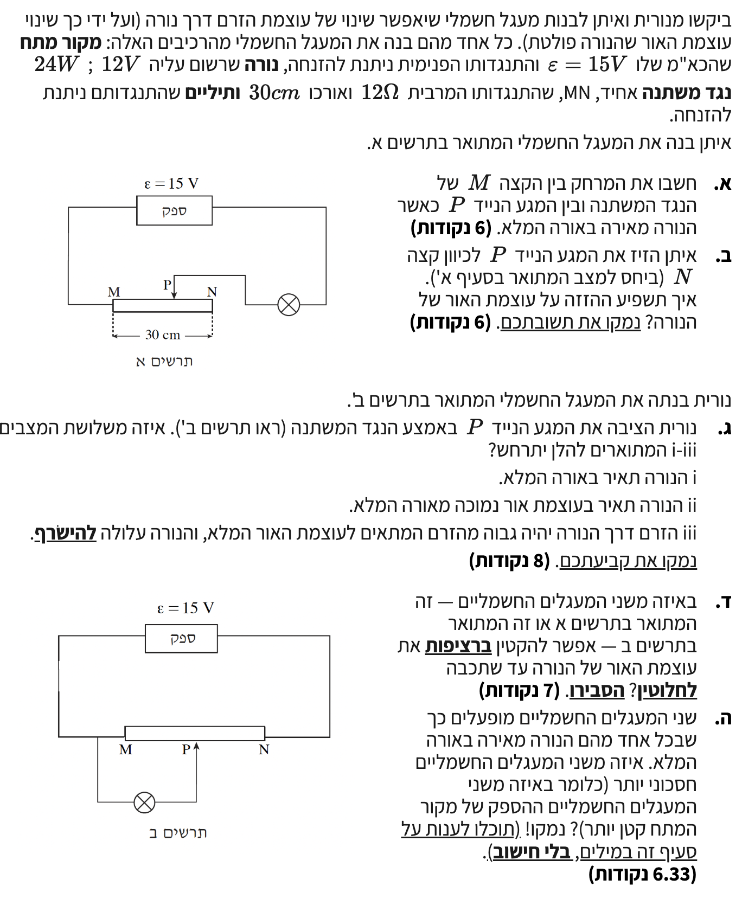

מעגלי זרם ישר - מערכות בקרה לשינוי עוצמת אור בנורה (ראוסטט ופוטנציומטר)

לפני שנתחיל לפתור את הסעיפים, נרכז את כל הנתונים הכלליים המופיעים בפתיח השאלה ונבין את משמעותם הפיזיקלית. מקור המתח אידיאלי ולכן המתח על הדקיו קבוע ושווה לכא"מ שלו. בנוסף, הנורה היא רכיב לא אוהמי, אך כפי שלמדנו, אנו יכולים לחשב את התנגדותה מתוך נתוני העבודה הרשומים עליה (בהנחה סבירה שההתנגדות קבועה בסביבת העבודה הזו או כמודל פשוט).
עקרון פיזיקלי 1: הנגד עשוי מחוט אחיד, לכן לפי נוסחת ההתנגדות ישנו יחס ישר בין אורך הנגד להתנגדותו (\( R \propto l \)).
עקרון פיזיקלי 2: במעגל טורי, סכום מפלי המתח על הרכיבים שווה למתח הכולל של המקור (הפרש הפוטנציאלים הכללי).
כדי שהנורה תאיר באור מלא, המתח עליה חייב להיות שווה למתח הרשום עליה, כלומר \( V_L = 12\text{ V} \). נחשב תחילה את זרם העבודה התקין של הנורה ואת התנגדותה מתוך הנתונים הרשומים (על ידי שימוש בנוסחאות \( P = V_{AB}I \) ו-\( V = RI \)):
במעגל א', הנגד הפעיל מחובר בטור לנורה. לכן הזרם דרכו הוא \( I = 2\text{ A} \). מקור המתח מספק \( 15\text{ V} \). במעגל טורי, סכום המתחים על הרכיבים שווה לכא"מ המקור. לכן, המתח העודף חייב ליפול על הנגד המשתנה:
נחשב את ההתנגדות הנדרשת של החלק הפעיל \( R_{MP} \) באמצעות חוק אוהם, ומכיוון שיש יחס ישר בין ההתנגדות לאורך (הנגד אחיד), נוכל להרכיב פרופורציה בין הקטע הפעיל לנגד כולו. נסמן את אורך הקטע MP באות \( x \):
מסקנה: המרחק בין הקצה M למגע הנייד P הוא \( 0.0375\text{ m} \) (או \( 3.75\text{ cm} \)).
תחילה נפתח את הקשרים הרלוונטיים מתוך נוסחאות הבסיס: הזרם במעגל טורי מתקבל מהצבת מתח המקור האידיאלי בחוק אוהם: \( I = \frac{\epsilon}{R_T} \). את הספק הנורה נבטא על ידי הצבת חוק אוהם בנוסחת ההספק: \( P = V \cdot I = (I \cdot R) \cdot I = I^2 R \).
מסקנה: כתוצאה מהזזת המגע הנייד לכיוון N, עוצמת האור של הנורה תקטן.
מכיוון שהמגע הנייד נמצא בדיוק באמצע הנגד, הוא מחלק את התנגדותו המרבית (\( 12\ \Omega \)) לשני חצאים שווים:
המעגל מורכב משני חלקים המחוברים בטור למקור המתח:
הנורה (\( 6\ \Omega \)) מחוברת במקביל לקטע \( R_{MP} \) (\( 6\ \Omega \)). לפי הנוסחה לחיבור במקביל מתוך דף הנוסחאות נחלץ את ההתנגדות השקולה \( R_p \):
החלק המקבילי מחובר בטור לקטע הנותר של הנגד המשתנה \( R_{PN} \). נחשב את ההתנגדות הכוללת והזרם היוצא מהמקור:
הזרם הכולל, שגודלו \( 1.67\text{ A} \), מתקדם במעגל ומגיע לנקודת ההתפצלות (צומת). בצומת זה הוא מתחלק לשני ענפים המחוברים במקביל: הענף של הנורה והענף של קטע הנגד \( MP \). לפי עקרון שימור המטען בצומת (סכום הזרמים הנכנסים שווה לסכום היוצאים), מתקיים:
מכיוון שהזרם הכולל מתפצל בין שני הענפים, הזרם הזורם דרך הנורה בלבד חייב להיות קטן מהזרם הכולל שהגיע לצומת. כלומר, מובטח לנו ש-\( I_L < 1.67\text{ A} \).
בסעיף א' מצאנו שכדי שהנורה תאיר באורה המלא, היא זקוקה לזרם עבודה של \( 2\text{ A} \). היות שהזרם שהנורה מקבלת בפועל במצב זה קטן מ-\( 1.67\text{ A} \), הוא בוודאי קטן מ-\( 2\text{ A} \). מכיוון שהיא מקבלת זרם נמוך מהנדרש, ההספק שיתפתח בה יהיה קטן יותר.
מסקנה: המשפט הנכון הוא אפשרות ii: הנורה תאיר בעוצמת אור נמוכה מאורה המלא.
במעגל א' (טורי): כדי לקבל הספק מינימלי על הנורה, נביא את הנגד המשתנה להתנגדות מקסימלית (\( R_{MP} = 12\ \Omega \)). ההתנגדות הכוללת תהיה \( 18\ \Omega \). הזרם המינימלי במעגל יהיה:
מאחר והזרם אינו מתאפס, הנורה תמשיך להאיר באור קלוש (אינה כבויה לחלוטין).
במעגל ב' (מחלק מתח): אם נזיז את המגע הנייד שמאלה עד לנקודה M, אורך הקטע MP יהיה אפס, וכן התנגדותו תהיה אפס. מכיוון שהנורה מחוברת במקביל לקטע זה, נוצר למעשה חוט קצר במקביל לנורה. המתח על קצר הוא אפס, ולכן המתח על הנורה הוא אפס וההספק שלה יתאפס.
מסקנה: מעגל ב' הוא המעגל שבו אפשר להקטין ברציפות את עוצמת האור עד שהיא נכבית לחלוטין.
עקרון 1: מקורות המתח זהים. במקור אידיאלי מתח ההדקים שווה לכא"מ (\( V_{AB} = \epsilon \)). לכן ההספק שמוסר המקור נקבע אך ורק על פי הזרם הכולל שהוא מזרים למעגל (\( P = \epsilon \cdot I_{tot} \)).
עקרון 2: חוק שימור המטען בצומת - סכום הזרמים הנכנסים לצומת שווה לסכום הזרמים היוצאים ממנו.
במעגל א': המעגל מורכב מלולאה אחת רציפה ללא צמתים. הזרם שיוצא ממקור המתח זורם בשלמותו דרך הנורה. לכן, הזרם הכולל שווה בדיוק לזרם הנורה:
במעגל ב': קיים צומת בנקודה P. הזרם היוצא מהמקור מגיע לצומת ומתפצל: ענף אחד דרך הנורה, וענף שני דרך הקטע MP של הנגד המשתנה. לפי עקרון שימור המטען, הזרם הכולל שווה לסכום הזרמים:
הזרם בהתפצלות הנוספת אינו אפס (\( I_{MP} > 0 \)). לכן, הזרם הכולל שיוצא מהמקור במעגל ב' גדול מהזרם במעגל א'. מכיוון שההספק הוא מכפלת הכא"מ בזרם, המקור המזרים זרם נמוך יותר הוא המקור שמספק פחות הספק.
מסקנה: מעגל א' (המעגל הטורי) הוא החסכוני יותר, שכן הזרם הכולל הנמשך ממקור המתח קטן יותר לעומת מעגל ב'.